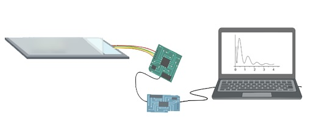

Hack a kitchen scale for lab use for just $20

Common digital kitchen scales have a surprisingly high sampling rate in their sensor, but any data logging using a kitchen scale is limited to the sampling rate of the scientist writing down the data. But now, there is a preprint paper on hacking a digital kitchen scale to record data to a computer by D Virag, J Homolak, I Kodvanj, Perhoc Babic, A Knezovic, Barilar Osmanovic, and M Salkovic-Petrisic.
The paper "Repurposing a digital kitchen scale for neuroscience research: a complete hardware and software cookbook for PASTA" , takes a common kitchen scale, a $10 HX711 controller circuit board , a $10 NodeMCU ESP-32S communication board, and a USB cable and creates an experimental platform with with an 80 Hz sampling rate! .
A wiring schematic can be found in the paper or as a .fzz CAD file schematic available on the bioRxiv preprint page. The software for the paper is on GitHub, but spread out through multiple pages.